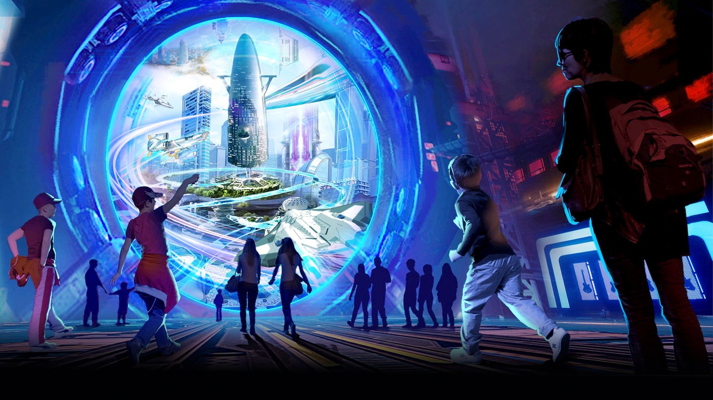

How could the metaverse impact the
world and the future of technology ?
Meta is just one company that has embraced the future of virtual reality.

Facebook's announcement in October that it was further embracing the metaverse and rebranding itself as Meta set off a firestorm. While experts say the metaverse is still many years away, the explosion of the term has many asking, what is the metaverse?
The metaverse aims to innovate the way people interact with each other on the internet, interacting in a way previously only thought possible in science fiction.
"The metaverse is essentially a massive, interconnected network of virtual spaces," Rabindra Ratan, associate professor of media and information at Michigan State University. told ABC News Live. "In theory, we'll be able to move from one virtual world to another in the metaverse, but we'll be wearing virtual reality goggles or maybe augmented reality."
Technologies like virtual reality, a computer-generated simulation of a 3D image or environment, and augmented reality, superimposing a computer-generated image on a user's view of the real world, will play a significant role in bringing the metaverse to life.
The metaverse could potentially use virtual reality, or augmented reality as we know it now, to immerse users in an alternate world. The technology is still being developed, but companies like Meta say they are building and improving these devices. Meta's Oculus Quest, now in its second model, is one such device.
"When you're in the metaverse, when you're in a virtual reality headset, you will feel like you're actually sitting in a room with someone else who can see you, who can see all of your nonverbal gestures, who you can respond to and mimic," Ratan said.
Immersive worlds and creating online avatars is nothing new, as games like Grand Theft Auto Online, Minecraft and Roblox have already created virtual universes. Meta's announcement last October aims to go beyond entertainment, and create virtual workspaces, homes and experiences for all ages.
"What's happening now is the metaverse for social media without gaming," Ratan said. "The new metaverse is designed to support any type of social interaction, whether that's hanging out with your friends or having a business meeting."
While the excitement around the concept of a metaverse is rapidly growing, Ratan said bringing that vision to reality is still many years away.
"People are building it in slow bits and pieces," Ratan said. "We don't know exactly how people are going to use the metaverse."
Experts say companies are making sure they are prepared once the change takes place.
"I think no one really knows exactly what shape it's going to take, but they need to make sure that they're at the forefront of it," Arun Maini, a tech YouTuber from England with over 9 million subscribers.
The possibilities of a virtual world, where everything is supported by lines of codes, could open new revenue streams for companies diving into this new venture. The opportunities are limitless, and based on how Americans have adopted an increasingly digital life, the change is already taking place. Walmart announced earlier this month it would step into the virtual world, providing currency and allowing customers to buy and sell NFTs.
"Over the next five years, you're going to see Metaverse technology become real, concrete and sampleable," said CNET Editor-at-Large Brian Cooley. "I think it's going to be impressive, but I think it's going to have many flavors, not just one."
A Pew Research study from March 2021 found that 31% of Americans were almost always online, while 79% were online several times a day. Maini said the recent patterns show how people are starting to shift away from physical to virtual goods based on the time spent on apps and games.
"In the metaverse, you will still have those stupidly expensive designer Gucci trainers to be able to show that, 'Oh yeah, look, I'm doing well for myself,' even if really it's just a line of code," Maini said.
The efforts required to make that world a reality, however, could be extensive. Many people in the U.S. still don't have access to high-speed broadband connections, and the price of reliable VR hardware could be high. But for Maini, he said the hardware is becoming more affordable and accessible as new technologies are developed.
"Like every day, the promise of this virtual land is increasing. So like a person's willingness to pay is going up and up and up. And if at the same time that hardware is getting cheaper, there probably will be a point where there's like mass adoption," Maini said.
With a high demand, the need for innovation is even higher. Meta announced on Jan. 24 it's developing a new AI supercomputer, describing it as a building block toward bringing the vision of a metaverse into reality.
"The AI Research SuperCluster, or RSC, will help Meta's AI researchers build better models that can learn from trillions of examples; work across hundreds of different languages; seamlessly analyze text, images and video together; develop new augmented reality tools and more," Meta said in a statement.
"Ultimately, the work done with RSC will pave the way toward building technologies for the next major computing platform -- the metaverse, where AI-driven applications and products will play an important role," the statement continued.
Virtual interactions offers enticing financial opportunities for big businesses, but they also raise concerns over the impact on users and safety of its users.
Meta continues to face scrutiny for alleged harmful effects on young users and how it monitors hate speech across its apps, including Instagram. With millions of users able to join different platforms, Maini said moderation is important.
"If you're trying to moderate something of that level of freedom, then you're going to have to be moderating in a way that's like incredibly invasive," Maini said. "So we either end up in a situation where it's complete chaos and everyone's allowed to do everything and you know, there's racism, sexism, abuse and all that kind of stuff, or there's incredibly tight moderation and no one's allowed to do anything."
With the speed at which technologies are being developed and companies are implementing innovative ideas around immersive reality, it's only a matter of time before the metaverse becomes a reality.
"The experience of the web will be different in many ways than it is now," Ratan said.
Conclusion
Metaverse has been getting much attraction in recent years because it is expected to connect people from the real world to engage in the virtual environment. It has already garnered enough attraction from the best tech giants, and although the development of metaverse is in the toddler’s stage, great things are already being expected. Startups and enterprises have also started adapting to the metaverse and its vast implications, and companies are already putting up a lot of research on consumerism that is about to take place in the metaverse. The metaverse is new to the internet world, and it will have a tremendous impact on society. Web 3.0s new era of metaverse will open doors to unlimited opportunities and creativity to open up a new platform for startups and enterprises.